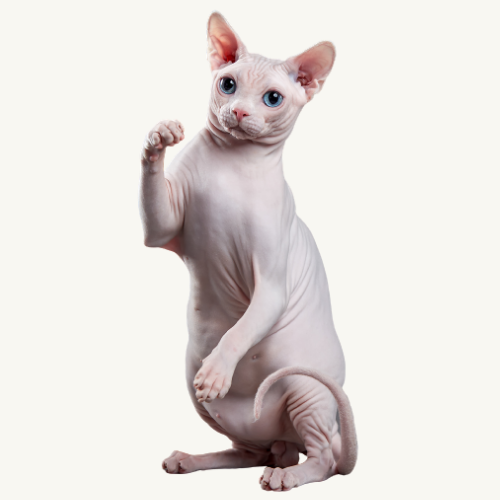
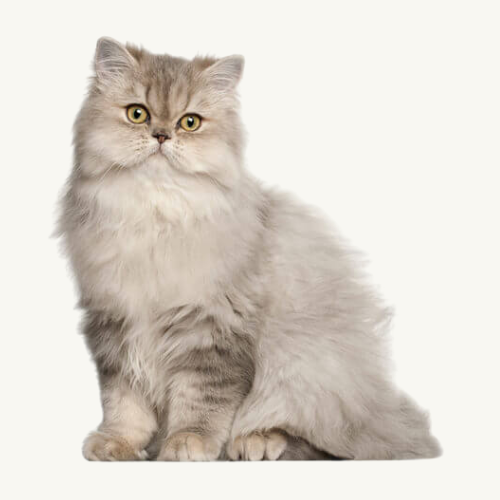
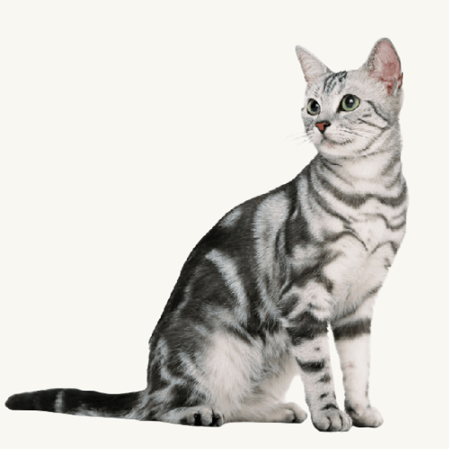

Ras Kucing Sphynx

Halo, cat lovers! Kenalin nama aku Pinky, sama ya seperti warna kulitku? Hihi. Aku berasal dari kota Toronto di Canada. Kalian pasti kurang suka ya liat aku karena gak punya bulu. Ini memang ciri-ciri dari ras ku yang hampir tidak punya bulu, tapi ada kok! Dulu aku lahir dan dikembangbiakan dari nenek buyutku yang tidak berbulu juga dan dia muncul dari mutasi di Ontario, Kanada di tahun 1966. Makanya sekarang ada aku deh(hihihi). Saat pertama kali lihat, semua orang pasti tau jenisku deh karena aku punya ciri-ciri sendiri yang gak dimilikki kucing lain, diantaranya adalah badanku ramping dengan telinga yang berbentuk segitiga, kulitku di kening berkerut, ekorku panjang runcing serta aku memilikki dada yang kuat meskipun jarang workout. Meskipun aku gak berbulu, tapi banyak lho yang suka dan pelihara aku. Salah satu alasannya itu katanya aku friendly, lincah, dan pandai. Aku ini juga suka berteman dan main dengan kucing lain, jadi gak bosen deh.
Mau tau gak salah satu keistimewaanku? Aku ini adalah satu-satunya kucing yang memilikki kelenjar keringat lho, jadi orang yang memeliharaku tidak perlu repot-repot menjaga aku agar di tempat yang sejuk! Tapi karena kelenjar keringat yang aku punya, terkadang kulitku suka mengelupas dan menjadi kehitaman sehingga pemilikku harus rajin mandiin aku deh. Untuk makanan, aku suka seperti kucing-kucing lain kok! Aku suka minum susu, minum vitamin, dan juga makan makanan kucing seperti pada umumnya. Pemilikku biasanya selalu memberi makan aku yang bernutrisi dan juga teratur, makanya aku sehat deh! Jadi, gak susah kan ngerawat aku? Hihihi. Sampai jumpa lagi Cat Lovers!
Ras Kucing Persia

Merhaba, Cat Lovers! Sekarang waktunya aku kenalan ya! Nama aku Molly dan berasal dari Persia (kalau sekarang namanya Turki dan Iran). Aku adalah kucing ras asing yang pertama kali ke Thailand lho! Aku menjadi ras kucing yang paling populer baik lokal maupun internasional. Pemilik aku sangat suka denganku karena bentuk badanku yang gembul dan lucu. Selain itu, aku juga punya karakter-karakter unik seperti kepala dan dahi yang bundar, telinga kecil dengan ujungnya bulat, mata belo, ekornya pendek, bulu panjang dan tebal serta tubuh dan kaki pendek. Biasanya saat manusia melihatku pertama kali, mereka pasti akan tahu jenis aku karena karakter-karakterku. Aku juga ramah, lemah lembut, santai, periang dan cerdas sehingga semua kucing dan manusia suka bermain dengan aku.
Untuk makanan, aku tidak pilih-pilih kok! Aku biasanya suka makanan kucing seperti biasanya, tetapi harus memilikki asupan protein 4 kali lipat lebih banyak daripada kalian. Aku terkadang juga diberikan racikan khusus oleh pemilikku untuk memenuhi kebutuhan 3 kali waktu makanku. Kalau kalian suka dengan aku, kalian harus perhatikan ya cara merawatnya. Aku memilikki bulu yang tebal sehingga membutuhkan perawatan khusus yaitu menyisir dan menyikat rambutku setiap hari. Aku juga harus tetap di tempat yang sejuk karena rambutku sangat sensitif terhadap udara panas huhuhu. Agak sulit ya merawatku? Tapi kalian tenang aja, selama aku sehat aku pasti akan menghabiskan waktu untuk bermain dengan kalian kok! Hihihi. Segitu dulu ya ceritaku, sampai jumpa!
Ras Kucing American Shorthair

Hai, Cat Lovers! Lucu ya aku? Hahahaha. Kenalin nama aku Chloe dan aku berasal dari Amerika. Aku adalah kucing dengan ras American Shorthair yang terkenal dengan bulu berwarna perak yang khas dan corak seperti marmer. Sekarang sih ada lebih dari 60 jenis warna bulu kucing lain sepertiku. Banyak manusia yang tertatik denganku karena karakterku yang unik, diantaranya adalah kakiku lurus pendek, badanku besar, coraknya unik dan aku memilikki keseimbangan yang baik lho! Aku juga sifatnya ceria, ramah, tenang dan pintar berburu karena keseimbangan tubuhku yang baik. Tetapi dibandingkan dengan 2 temanku diatas, aku tidak mudah bergaul dan jarang bermain.
Pemilik aku tetap sayang aku kok, karena aku suka memburu kecoak, cicak, dan hewan-hewan kecil yang suka jalan-jalan didalam rumah hahaha. Kalau kalian mau ajak main aku, kalian bisa kasih aku boneka, bola atau mainan apapun yang bisa kukejar. Aku suka banget main kejar-kejaran! Untuk makanan, aku sama seperti kucing lainnya, asalkan teratur. Aku suka diberikan makanan yang berprotein dan memilikki kandungan nutrisi yang penting dalam waktu 3 kali sehari, terkadang juga lebih sih hahaha. Aku suka banget makan makanya cepat gemuk deh. Mudah kan merawatku? Sampai jumpa Cat Lovers!